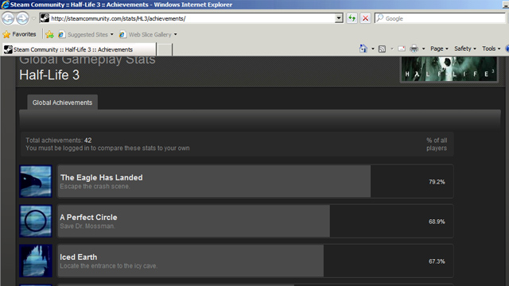

The COD series is a copy paste games series though, it does well in sales but it reuses loads of resources, that is also running on a dated engine that has been modded to hell to keep up. And it doesn’t matter how unsuccessful Half-Life 3 is on console for one reason, Valve fanboys are PC gamers they complain about the length but they will buy it. Half-life was released in 1998, Half-Life 2 didn’t get released until 2004, which was the best selling PC game of all-time(it may have lost that title but I’m not sure). The consoles didn’t even get proper version, even with the Orange Box. Valve is one of the few developers who, with lots of good reason, believe in PC gaming over console, so I doubt they care too much about console sales, but I’m sure they will release a version. Plus source engine isn’t outdated its one of the most modded and moddable engines, with proper updates to the source-code it can still be a perfectly relevant engine just look at Dear Esther I don’t think that looks very outdated at all.
Even if it is copy paste, they copy the things ppl like the most. I dont know about like you, but i thought valve had problems with doing that with ep 1 and 2.
true, but the do keep up, something i cant say about valve games, they work on and add a lot more their engine than valve does to source. Portal 2 was a real mixed bag, looking amazing in small test chambers, and looking ugly as hell in the old aparature and in more open maps.
And dear ester dosnt look nice since it on source, it just has great level design, the guy could probably do 5x better in cryengine. The guy seems to be way better than valve level designers, i doubt even valve can rival his work. And still it only produces graphics comparable to good old starker games ( good for source engine, but nothing that will blow your mind), gets nowhere near what crysis 2 shows on the consoles.
I really hope they show something great at vga
Dear Esther doesn’t look good on Source? You sound like you’re talking about the original and not the updated one. For the Source Engine, the new Dear Esther looks amazing! And Yes, the Level design is very well done… but the guy is pretty much remaking the mod himself, knowing how it’s already laid out and everything, so he just has to think of design and not the layout of the level. So how does that make him any better than a level designer at Valve? The designers at Valve are working with a specific style of art/design, they cant just go and do crazy shit. They have to make their levels work with the design and story of the game. ALSO they are considering the fact not everyone can run the game on maxed settings and their games are being released on consoles. So they cant load the levels with extreme detail due to that fact. I’m sure if they wanted to, they could definitely make something more amazing than the new Dear Esther.
Also, sure, it gets nowhere near what Crysis 2 looks like. That’s because Crytek is trying to show off their own game engine so other companies would use it. I played Crysis 2, shit was boring, looked pretty, but was boring. Any of Valve’s games are amazingly well written and are all fun, they look nice too. Maybe not the best gfx in the world, but better than a lot of games out there. 
As for the OP, He has a point there, due to the fact that HL3/ep3 mystery shirt thing had popped up recently, though almost everyone else has already thought of it.
Valve is also working on TF2 continuously. And there’s also that space game that we saw the concept art of with little tidbits in the DOTA2 leak.
So the lights are dynamic and there’s like 15 post processing effects going off at once… ooooo so advaaaanced.
But that exactly what i said ;f And about the level design, i like to think of it as a form of art, while anybody can express them self, you can instantly see some paintings or sculpts are better even if they are similar in complexity. Same goes for valve, i just play their games, then play different games, and i just feel valve falls behind.
Theiy improved a lot in portal 2, but even there i had this constant feeling they didnt push it.
OH yeah and there is teh fact he is just one guy and made something looking better than a company with 250 employees ever did ;D
There is a word for that, its called greed. Releasing games on consoles is no excuse for your games looking like balls, and valve sure as hell is not hurting for the $$$. What if they make hl2 look even worse to run on the wii ?
What im afaraid about is that in portal 2 there were no enemies, no visible characters on screen, no complex facial animations, and no fancy particle effects, and they still had problems with keeping up the visual quality in more open levels in p2. To make things worse the levels themself when they were getting more complex were really really tiny.
Im afraid of how much they will have to sacrifice to get hl3 to run on ps3 and xbox.
If i see l4dead in space, then l4d 2 in space before ep3 or hl3 i will lose my shit.
In portal 2’s defense, it had some models with quite a high poly count. I mean wheatley and the coop bots were detailed as fuck. In fact, everything but the maps themselves were pretty complex. I guess that’s the tradeoff.
Spoiled rich white boy want a pwitty gaem 4 his computah??? bawwwww.
The irony.
Wow you kids are desperate to find anything to do while you wait fro bm, even if its forum flaming eh ?
AT which point i said how i want the game to be only on the pc ? If valve can get it to run on an iphone and my pc without sacrificing the games quality, then why not, but the obviously have big problems with porting the newer source versions to the consoles, which in turn forces them to make the games simpler and smaller.
What you will call every reviewer who shits over bad games a spoiled white boy ? Or am i allowed only to suck up to valve and every game they make eh ?
Get a grip on reality boy.
Consoles aren’t holding Valve’s games back any more than the fact that over 96% of Steam users are using DX9 or lower. Obviously they aren’t going to push the graphics envelope if the majority of their customers wouldn’t be able to play the game.
What reviewer has ever called a Valve game a bad game.  get the dicks out of your ears.
get the dicks out of your ears.
Portal 2’s Metacritic rating is 95. The only Critic to give it below an 80 gave it a 70 which is still above average (even though dumbass gamers would try to make you believe otherwise.)
and the “controversial” quick cash-in sequel L4D2 has a metacritic rating of 89 not scoring lower than an 80 on any reviews
Where are these bad Valve games, that got terrible reviews? We’re sucking up to a company that has a great track record in making good games? Or we are just saying that HL3 is probably gonna be a good game because well, Valve has made quite a few good games so I think they know what they are doing.
Oh my, I haven’t seen that blue retard in a while.
Still, the OP manages to be even more retarded.
This whole thread is retarded.
As much as I would like to see a Cryengine-like version of Source (which I’m sure would be much more optimized) from Valve I’m sure a lot of people would be pissed since Valve has a history of making their games accessible to a very large amount of people. It’s not greed, I’m sure, it’s that Valve would rather sacrifice graphics and allow pretty much everyone to run their game than push the envelope and have nobody be able to play their game.
With that said, after people saying that Source is falling behind in the physics department with Source to other games, I would prefer that they improve on the physics rather than the graphics.
Edit: And I just looked it up. Gibbelin was on to something. About 70% of people that filled in the hardware survey on Steam are using either DX9 or DX10 so since Valve has access to this information, they’re not going to want to make a DX11 game that 70% of their users can’t play.
just a heads up: source was cutting edge when it first came out, and it was really hard to run it on max unless you had a high end pc.
this, and
this.
I’ve said this before, but my six-year-old laptop can still run L4D2 on mid-settings like a champion. Try that with any other modern game, my laptop would melt and fuse to my desk. It’s not about $$$ for Valve, it’s about $$$ for their fans: Valve knows that not everybody can afford to build a high-end gaming PC, and so they sacrifice the cutting-edge graphics in favor of better aesthetics, which is much more effective anyway. Valve are masters of immersion and storytelling.
But if you can’t get past the less-than-photorealistic graphics, well, then boo-hoo rich kid, go play your BF3 generic war shooter garbage.
I agree, consoles arent holding them back. Batman arkham city and gta 4 are great examples of huge console games. Whats holding them back is source+consoles combo, that engine was never written for multiplatform, and it shows.
Wasnt talking about portal, i loved the game, or any of valve games in particular. Just about the moronic approach of not criticizing a game.
But episode 1 and 2 sure sucked balls.
And whats stopping valve from making a scaleable game for high end pcs and the weaker ones. Game lods, hd textures, postprocesing, detailed textures can make all the difrence. But for that they would have to add proper streaming into source, so it stops leading the whole level at the start of it.
Just look at gta4, and red dead from rockstar for an example, they do wonders on the old console hardware.
And hi Maxey.
Still a cunt i see, stay classy.
The only problems with the 360 version of The Orange Box were:
Lack of M&K
TF2 never got it’s bugs fixed
I’ve heard horror stories about the PS3 version, but the 360 version runs smooth as hell and looks great. Probably has a few options turned down, but it still looks nice.
While I’ll agree Episode 1 was a weak entry its setting was nice (even though it didn’t feel that varied.) But Episode 2 was a great game I felt, with nice open levels in the forests and final stage and nice tight spaces in the Antlion nest and the white forest base.
/\This/\
The reason that valve does a “hardware survey” with every install is to collect this kind of data. There is a reason that valve is one of the most successful companies on the planet, they know their customers. As one of the people who still has a dx9 graphics processor, I appreciate that I can still run valve games. I can barely run crysis on a level that looks like utter crap. ep3 runs on full everything
Again, this is not greed from Valve’s part. I think its pretty reasonable, actually. After all, every developer wants their games to be played. This becomes easier when it can run on a regular PC rather than a “I need liquid Nitrogen to cool my processor” PC.
And if graphics are really THAT important to you, simply wait until two more iD Tech and you’ll get your kind of heaven, you strange person.
Has anybody any more sources or confirmations of this:
HL3 achievements:

I only got a link for it and the info that it was up and then gone again soon after.